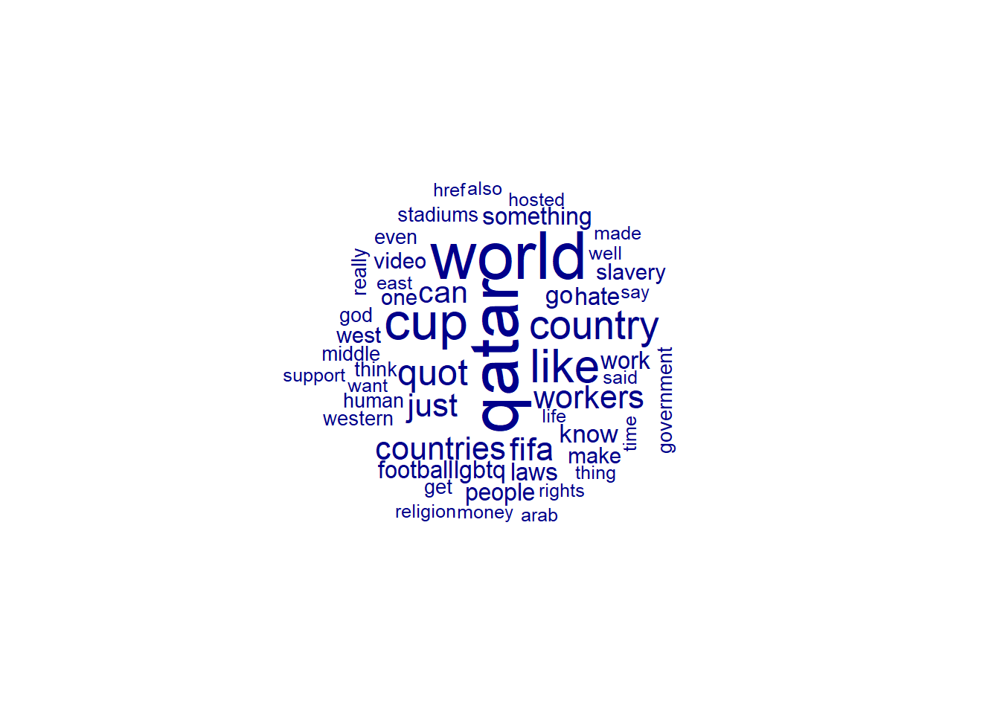
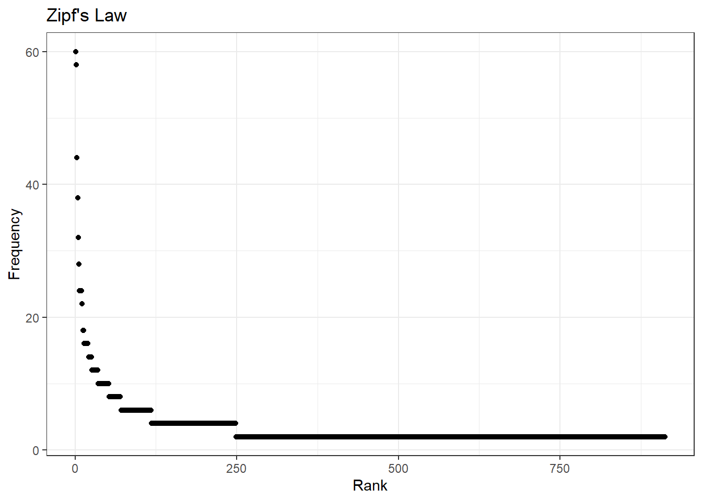
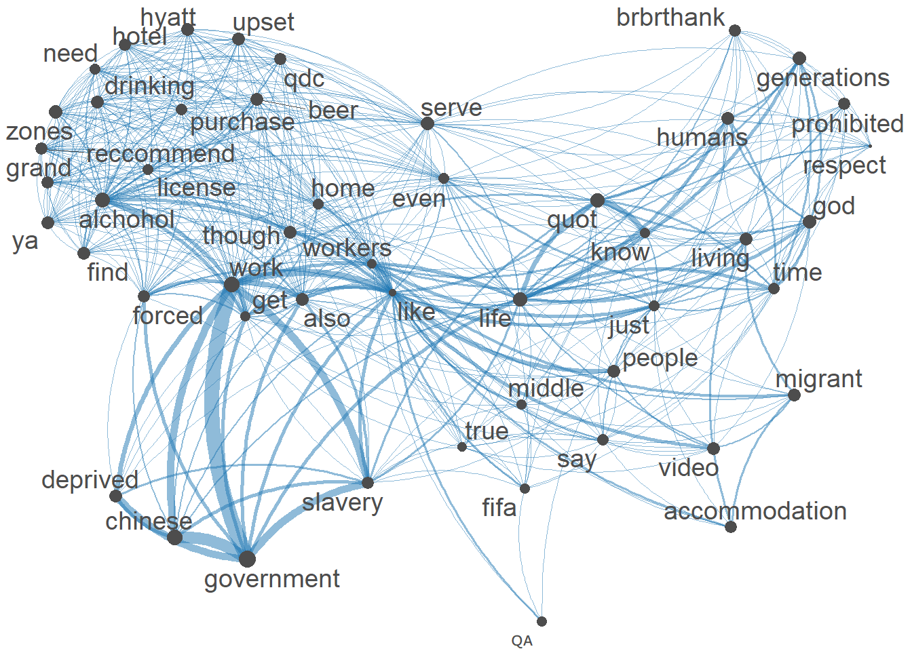

Code
library(tidyverse)
library(quanteda)
library(quanteda.textplots)
knitr::opts_chunk$set(echo = TRUE)Nayan Jani
October 25, 2022
Using Youtube API, I was able to extract comments from a video titles “The Disgraces of World Cup Qatar 2022”. The Video is from Nov 13, 2021 and has 421,163 views and 1,862 comments. The reason that I chose this video is because it is the most interacted video on youtube that talks about some of the controversies that surround this years World Cup I Qatar. I realize that this video is not current but my goal does not include comparison of language and thoughts over a period of time. The Qatar World cup has been a controversy for years and the discussion leading up to it has not changed because of the possible human rights violations. The comments I have scraped are the top 100 mostv relevant comments and the top 100 most recent commmentts. This only leaves me with 200 comments to deal with. For now I will only keep it at 200 so that I can figure out my plan fro preprocessing but for my next blog post I will scrape more videos that discuss the controversies of the World Cup.
Warning: One or more parsing issues, call `problems()` on your data frame for details,
e.g.:
dat <- vroom(...)
problems(dat)Rows: 99 Columns: 1
── Column specification ────────────────────────────────────────────────────────
Delimiter: ","
chr (1): I’ll try to get the next video essay out in less than a month lol
ℹ Use `spec()` to retrieve the full column specification for this data.
ℹ Specify the column types or set `show_col_types = FALSE` to quiet this message.Warning: One or more parsing issues, call `problems()` on your data frame for details,
e.g.:
dat <- vroom(...)
problems(dat)Rows: 99 Columns: 1
── Column specification ────────────────────────────────────────────────────────
Delimiter: ","
chr (1): I’ll try to get the next video essay out in less than a month lol
ℹ Use `spec()` to retrieve the full column specification for this data.
ℹ Specify the column types or set `show_col_types = FALSE` to quiet this message.df_qRev<- df_qRev %>%
rename(text = "I’ll try to get the next video essay out in less than a month lol")
df_qFull <- rbind(df_q,df_qRev)
df_qFull_new <- df_qFull %>%
select(text) %>%
mutate(text = str_remove_all(text,"39"))
df_qFull_new <- df_qFull_new %>%
select(text) %>%
mutate(text = str_remove_all(text,"<")) %>%
mutate(text = str_remove_all(text,">"))
corpus_qFull <- corpus(df_qFull_new)
corpus_sum <- summary(corpus_qFull)
qatar_tokens <- tokens(corpus_qFull,
remove_numbers = T,
remove_punct = T,
remove_symbols = T)My Goal is to:
Find the overall Sentiment of the comments (Positive and Negative, Other emotions)
What is the main focus in the comments (what topic is most important to the people in the comments)
Based on the most important topics and the sentiment of those comments, are those comments classified correctly as
positive or negative? If yes, are those comments “socially correct”? (logical/acceptable POV vs Stereotyped/Stigmatized POV)
qatar world cup like country quot
60 58 44 38 32 28
countries workers just fifa can go
24 24 24 24 22 18
know lgbtq laws football something hate
18 16 16 16 16 16
work people make one slavery video
16 16 14 14 14 14
west stadiums think human really western
14 12 12 12 12 12
get middle even god government well
12 12 12 12 12 10
religion rights money thing want said
10 10 10 10 10 10
hosted made arab east say time
10 10 10 10 10 10
also life href support used someone
10 10 10 10 8 8
going love corruption corrupt russia us
8 8 8 8 8 8
back watch died worker much true
8 8 8 8 8 8
still humans migrant saudi forgot stadium
8 8 8 8 6 6
give gay place respect wc deaths
6 6 6 6 6 6
anything arabs watching huge construction building
6 6 6 6 6 6
care cause etc slave labour believe
6 6 6 6 6 6
good home making lgbt islam stop
6 6 6 6 6 6
hope talk though lmao
6 6 6 6 quot world qatar like cup country work
36.30663 35.69459 34.83971 31.14267 30.56263 27.18423 24.29622
government workers fifa countries just can laws
23.94762 23.89524 22.90182 21.99489 21.99489 21.90397 20.74664
know go lgbtq football something hate people
20.70967 19.66581 19.47974 19.47974 18.40859 18.40859 18.40859
slavery video west make one really even
18.15331 18.15331 18.15331 17.04478 17.04478 15.55998 15.55998
god think human western get religion life
15.55998 15.55998 15.55998 15.55998 15.55998 15.18514 15.18514
href stadiums middle rights said hosted made
15.18514 14.60981 14.60981 13.93575 13.93575 13.93575 13.93575
time still well money thing want arab
13.93575 13.55684 12.96665 12.96665 12.96665 12.96665 12.96665
east say also support true humans
12.96665 12.96665 12.96665 12.96665 12.14811 12.14811 The words that stand out to me the most from the TFIDF are workers, rights, human, good, great, migrant, laws and hate an corruption. All of these words fall within the top 55 features of the TFIDF. Based off these findings within a small scope, I can infer that one major topic in these comments is the discussion of have migrant workers have been treated in the build up to the Qatar world Cup.
Document-feature matrix of: 6 documents, 912 features (98.37% sparse) and 0 docvars.
features
docs bullshit lgbtq rule perfect homophobic start everywhere disgrace forgot
text1 1 1 1 1 1 1 1 0 0
text2 0 0 0 0 0 0 0 1 1
text3 0 0 0 0 0 0 0 0 0
text4 0 0 0 0 0 0 0 0 0
text5 0 0 0 0 0 0 0 0 0
text6 0 0 0 0 0 0 0 0 0
features
docs microsoft
text1 0
text2 1
text3 0
text4 0
text5 0
text6 0
[ reached max_nfeat ... 902 more features ]
This show a visual of the frequency of the terms in the dfm.
Frequency Rank
qatar 60 1
world 58 2
cup 44 3
like 38 4
country 32 5
quot 28 6
Looking at my distribution of words it seems like 8 terms in mt DFM appear way more frequently than the rest of the terms. Byadding more data I belive this will smooth out.

The features that pop out the most from the Feature Co-occurrence matrix are conditions, workers and pay due to the size of their point and location within the Semantic Network. The grouping of words job,pay,companies,workers,system and conditions suggests that there is a thematic similarity between them. This could imply a topic that includes these words.
For my next post I will add more data to my corpus and begin dictionary analysis.
---
title: "Blog Post 3"
author: "Nayan Jani"
description: "Summary Stats"
date: "10/25/2022"
format:
html:
toc: true
code-fold: true
code-copy: true
code-tools: true
categories:
- Blog3
- Nayan Jani
---
```{r}
#| label: setup
#| warning: false
library(tidyverse)
library(quanteda)
library(quanteda.textplots)
knitr::opts_chunk$set(echo = TRUE)
```
## My Data
Using Youtube API, I was able to extract comments from a video titles "The Disgraces of World Cup Qatar 2022". The Video is from Nov 13, 2021 and has 421,163 views and 1,862 comments. The reason that I chose this video is because it is the most interacted video on youtube that talks about some of the controversies that surround this years World Cup I Qatar. I realize that this video is not current but my goal does not include comparison of language and thoughts over a period of time. The Qatar World cup has been a controversy for years and the discussion leading up to it has not changed because of the possible human rights violations. The comments I have scraped are the top 100 mostv relevant comments and the top 100 most recent commmentts. This only leaves me with 200 comments to deal with. For now I will only keep it at 200 so that I can figure out my plan fro preprocessing but for my next blog post I will scrape more videos that discuss the controversies of the World Cup.
```{r}
df_q<- read_csv("_data/comments_q.csv")
df_q<- df_q %>%
rename(text = "I’ll try to get the next video essay out in less than a month lol")
df_qRev<- read_csv("_data/comments_q.csv")
df_qRev<- df_qRev %>%
rename(text = "I’ll try to get the next video essay out in less than a month lol")
df_qFull <- rbind(df_q,df_qRev)
df_qFull_new <- df_qFull %>%
select(text) %>%
mutate(text = str_remove_all(text,"39"))
df_qFull_new <- df_qFull_new %>%
select(text) %>%
mutate(text = str_remove_all(text,"<")) %>%
mutate(text = str_remove_all(text,">"))
corpus_qFull <- corpus(df_qFull_new)
corpus_sum <- summary(corpus_qFull)
qatar_tokens <- tokens(corpus_qFull,
remove_numbers = T,
remove_punct = T,
remove_symbols = T)
```
## Key Questions
My Goal is to:
- Find the overall Sentiment of the comments (Positive and Negative, Other emotions)
- What is the main focus in the comments (what topic is most important to the people in the comments)
- Based on the most important topics and the sentiment of those comments, are those comments classified correctly as
positive or negative? If yes, are those comments "socially correct"? (logical/acceptable POV vs Stereotyped/Stigmatized
POV)
## DFM and DFM_TFIDF
```{r}
qatar_tokens <-tokens_tolower(qatar_tokens)
qatar_tokens <- tokens_select(qatar_tokens,
pattern = c(stopwords("en"),"[a-z]","t","m","=","ve","don","s"),
selection = "remove")
qatar_dfm <- dfm(qatar_tokens)
topfeatures(qatar_dfm,100)
qatar_dfm_tfidf <- dfm_tfidf(qatar_dfm)
topfeatures(qatar_dfm_tfidf,55)
```
The words that stand out to me the most from the TFIDF are workers, rights, human, good, great, migrant, laws and hate an corruption. All of these words fall within the top 55 features of the TFIDF. Based off these findings within a small scope, I can infer that one major topic in these comments is the discussion of have migrant workers have been treated in the build up to the Qatar world Cup.
## word Cloud
```{r}
head(qatar_dfm)
set.seed(1245)
textplot_wordcloud(qatar_dfm, min_count = 10, random_order = FALSE)
```
This show a visual of the frequency of the terms in the dfm.
## Zipf's Law
```{r}
word_counts <- as.data.frame(sort(colSums(qatar_dfm),dec=T))
colnames(word_counts) <- c("Frequency")
word_counts$Rank <- c(1:ncol(qatar_dfm))
head(word_counts)
ggplot(word_counts, mapping = aes(x = Rank, y = Frequency)) +
geom_point() +
labs(title = "Zipf's Law", x = "Rank", y = "Frequency") +
theme_bw()
```
Looking at my distribution of words it seems like 8 terms in mt DFM appear way more frequently than the rest of the terms. Byadding more data I belive this will smooth out.
# Feature Co-occurrence matrix
```{r}
q_fcm <- fcm(qatar_dfm)
# keep only top features.
small_fcm <- fcm_select(q_fcm, pattern = names(topfeatures(q_fcm, 50)), selection = "keep")
# compute weights.
size <- log(colSums(small_fcm))
# create network.
textplot_network(small_fcm, vertex_size = size / max(size) * 4)
```
The features that pop out the most from the Feature Co-occurrence matrix are conditions, workers and pay due to the size of their point and location within the Semantic Network. The grouping of words job,pay,companies,workers,system and conditions suggests that there is a thematic similarity between them. This could imply a topic that includes these words.
## Next Post
For my next post I will add more data to my corpus and begin dictionary analysis.